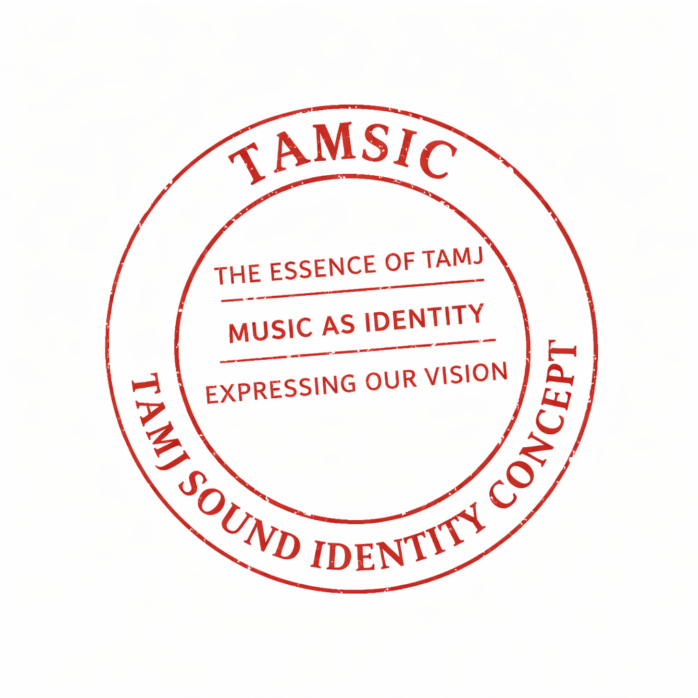
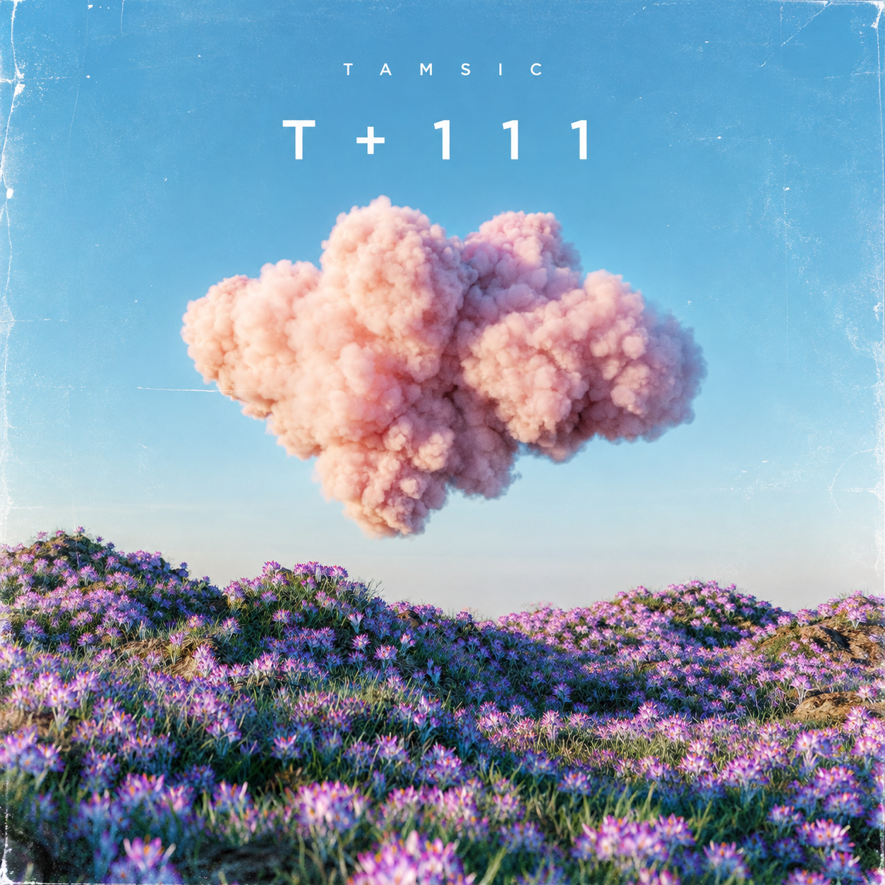
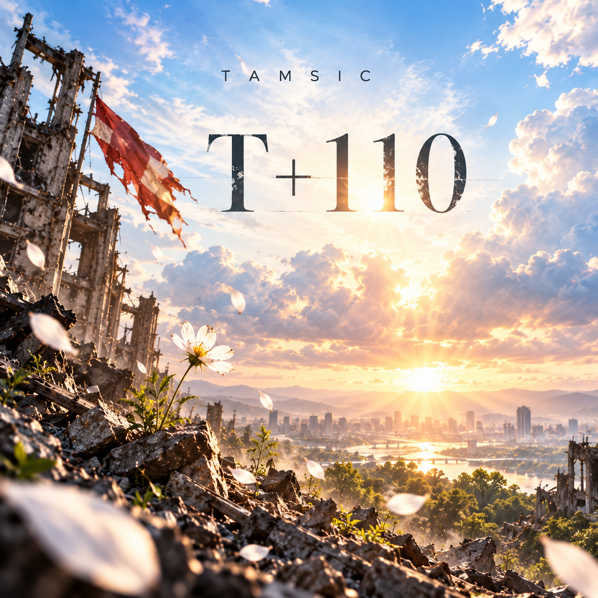
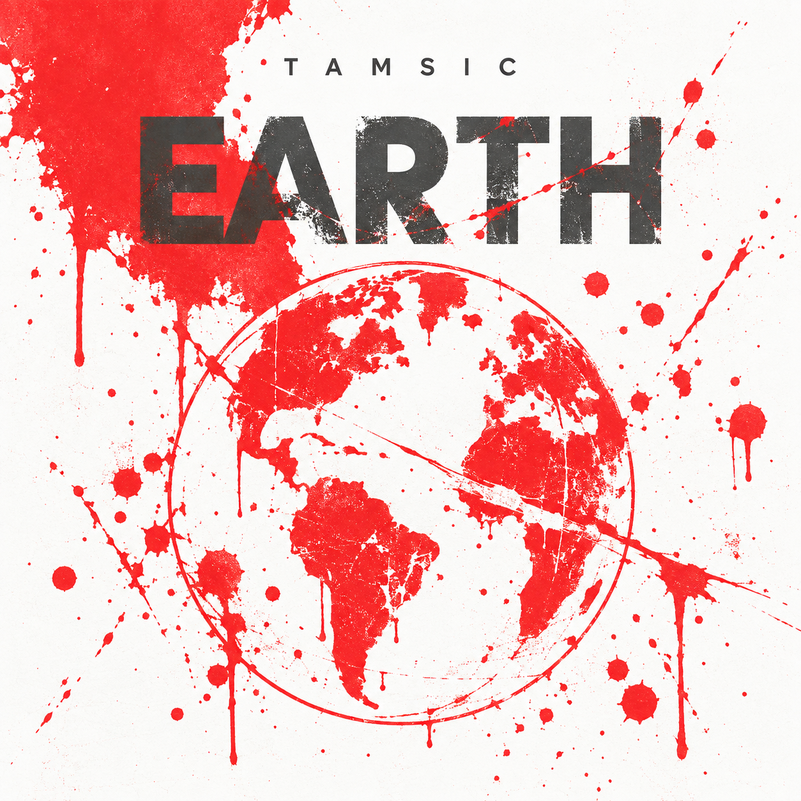

TAMSIC Artist 000
The voice of TAMJ itself —
music as identity,
expressing our vision.

TAMSIC は個人アーティストではなく、レーベル自身が音として立ち上がる存在です。no-no・kiki・gEN・TAMSIC の音楽の背後で静かに流れる、タムジ株式会社そのものの声。
Numbered tracks — the core catalog under TAMSIC's own name.


Independent works released under TAMSIC's name with their own titles.
